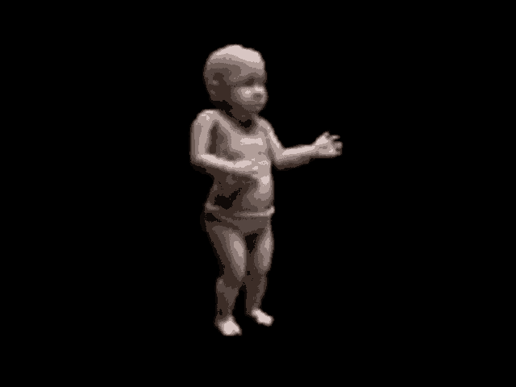
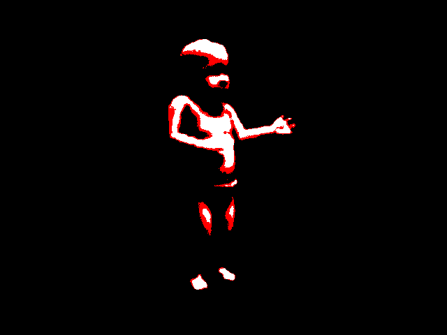
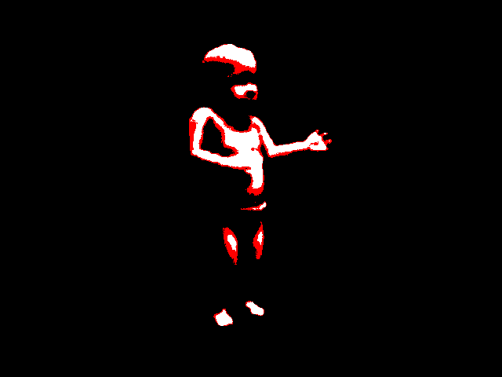

Kacaaaaw
First blog post :):):):):):):.
worms? 9.2.2016
Gulls, or colloquially seagulls, are seabirds of the family Laridae in the suborder Lari. They are most closely related to the terns and skimmers and only distantly related to auks, and even more distantly to waders. Until the 21st century, most gulls were placed in the genus Larus, but that arrangement is now considered polyphyletic, leading to the resurrection of several genera.[1] An older name for gulls is mews, which is cognate with German Möwe, Danish måge, Swedish mås, Dutch meeuw, Norwegian måke/måse and French mouette, and can still be found in certain regional dialects.[2][3][4] Gulls are typically medium to large in size, usually grey or white, often with black markings on the head or wings. They typically have harsh wailing or squawking calls; stout, longish bills; and webbed feet. Most gulls are ground-nesting carnivores which take live food or scavenge opportunistically, particularly the Larus species. Live food often includes crustaceans, mollusks, fish and small birds. Gulls have unhinging jaws which allow them to consume large prey. Gulls are typically coastal or inland species, rarely venturing far out to sea, except for the kittiwakes.[5] The large species take up to four years to attain full adult plumage, but two years is typical for small gulls. Large white-headed gulls are typically long-lived birds, with a maximum age of 49 years recorded for the herring gull.[6] Gulls nest in large, densely packed, noisy colonies. They lay two or three speckled eggs in nests composed of vegetation. The young are precocial, born with dark mottled down and mobile upon hatching.[7] Gulls are resourceful, inquisitive, and intelligent, the larger species in particular,[8] demonstrating complex methods of communication and a highly developed social structure. For example, many gull colonies display mobbing behavior, attacking and harassing predators and other intruders.[9] Certain species have exhibited tool-use behavior, such as the herring gull, using pieces of bread as bait with which to catch goldfish, for example.[10] Many species of gulls have learned to coexist successfully with humans and have thrived in human habitats.[11] Others rely on kleptoparasitism to get their food. Gulls have been observed preying on live whales, landing on the whale as it surfaces to peck out pieces of flesh.[12]
 
